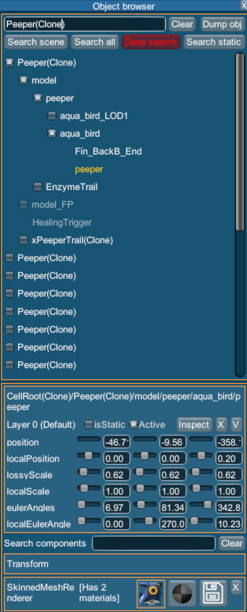
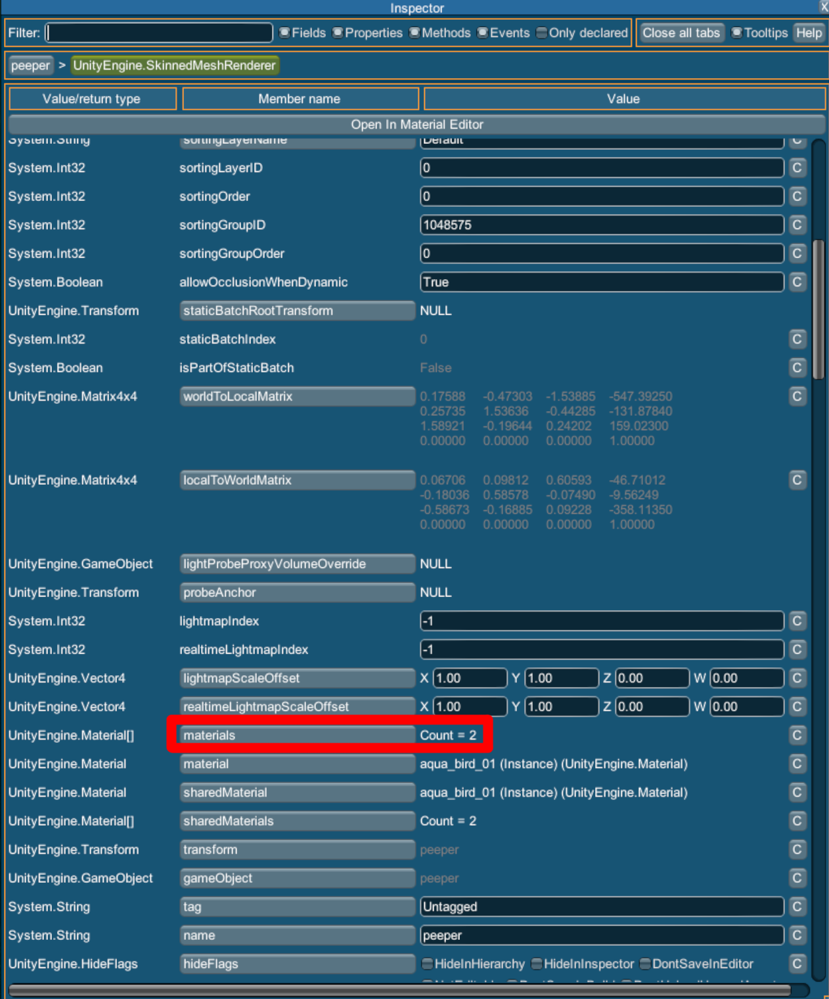
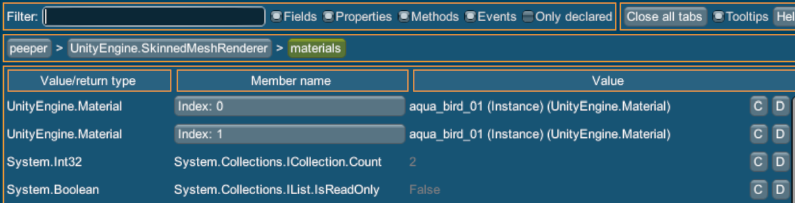

Using the runtime editor
The first thing you'll need to do is download and install Lee23's runtime editor from Submodica.
Here is the link:
https://submodica.xyz/mods/sn1/109
Once you have it installed, open Subnautica and press F7 to open the runtime editor. It should look something like this:

To find, for example, a peeper prefab, click on the search bar in the top right and type in "Peeper", then click "Search Scene".
When prefabs are instantiated (Spawned in the scene) they get "(Clone)" added to their name.
Knowing this, we're looking for "Peeper (Clone)".
Once you've found a Peeper, if you wanted to replace a texture on the Peeper you'd click on the PrefabIdentifier component to view the ClassId
Both of the classIDs will work as the prefabClassID.
The renderer component that holds the texture you want to replace will be different for each prefab,
but since I know the renderer location for the "aqua_bird_01" texture, I'll use that for the tutorial.
To find the child of the prefab with the renderer, click on the grayish box on the left of the name to expand the child hierarchy.
I'll navigate to "peeper". The path to this gameobject is "model/peeper/aqua_bird/peeper".
This is the same path you'd use for the
rendererHierarchyPath


If you click on the SkinnedMeshRenderer component you can view the properties of the renderer.
If you scroll down you can click on the materials property to view the materials on the renderer.

This is where you find what materialIndex you need for the texture you're replacing